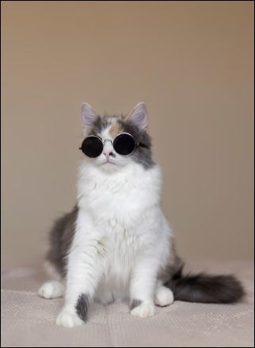

Ceci et un site Web putain.
serieusement, vous penser q'un putain de site web n'a pas besoin de style?
- merde ne pése pas une tonne (en fait,c'est selement 34,97 KO lorsque la photo de chat de 27,83ko ci-desous est suprimée)
- la page pése 63.02ko soit 93,7%de moi que la page d'accuel de goole
- Convien a votre iphone 1ére generation(bien que cela ne fonctione pas sur votre putain de 16x32 Tamagochie
- il senble perque identique surtout les écrans
- tout les conards qui visitent ce site peuvent l'utiliser sans plrobleme,un quel suite
- il est accesible Pour que tout le mone puis en profiter mais tout le monde ne peut pas lire se cie Ha Ha HA
- Il est encore plus lisible que les deux vertion precédente et il a ausie un style epuré sans resanbler a un site web ARPANET
- Ne charge pas d'image ou de scripts masif.Nous devrions nous préocuper des persones qui Utisisent encore IPoAC
- Utise uniquement des resouces gratuit et ouvertes comme cette fonte apeler "Open Sans" qui pese 15,21 ko wtf
- il ne charge pas votres glorieux jQuery ou jQueryUi de tous leurs stiles de merde. Ni angulaire ni aucun autre cadre.Ce site est fait HTML,CSS3etjs.gardez le ala vanille!
- Ninclut aucun service de suivi de de se cite mes bon peut importe
- Les image ne sont pas interdites, mais lorque SVG est disponible JUSt USE IT. a
- utilisez des couleur putain
- Les lien n'ont pas vraiment besoin de garder ce bleu de merde le navigateur:ni cette couleur violette ils sont marqueés comme etant vister.il sufit de leur doner une belle couleur
Eh bien devinez quoi,enfoiré:
Ce site est encor diférant que le denier gars et le gars avant lui.
Pourquoi?
- C'est sur une connection sécurisée-ainsi personne ne peut espionner ce que nous servons (la page peut être diférente pour tout le monde,pshht!)
- Il utilise l'un des gTLDles plus répandus sur le marché:website
- Il utise egalement un tld besthemonsterfucking.website,consulter domairpour faire que queleque chose de cool aussi.
- il utilise le Kikassig Let's Ecrypt Ca (ne voyez-vous pas le magnifique verrou vert?
- il fontionne sur nginx:le meilleur putain de serveur web à la place d'Apache server
- il n'utilise une version presonalisée de l'imterpressnainant ultra-léegé jQuery/s
- il nutylise pas bien une seule requete multimedia, pas vraiment
- il ne prandre probablement pas en charge tout les navigateur webs de l'utilisater et obsoléte,il le il passera peut-être de la merde qu'il utilise à un navigater bocoup plus cool.
- Il utise des technologies intéressantes telles que JavaS
 CSS3
CSS3  et HTML5
et HTML5 
- Il suporte HTTP/2
- il comppent une en-tête Cache-Control afin que vous ne gaspierpas votre précieuse bande passente si vous vitez le site web plus d'une fois.
- il utilse Piwik,une platforme gratuite et opensource(nous vous aimon toujour Google ne vous fache pas contre nous)
- il permet un accés universel à partir de tout site web via CORS.
- C'est accssible
- C'est open Source,disponible gratuitement sur Github,et tout le monde peut y contribuer.
- il utilise la licence publique WTFPL-faites ce que vous foutez comme vous voulez ce qui et asserz clair sur se que vous pouvez pas faire:
0. vous faite juste ce que vous vouler.
Metez en core moins de contrase
Oui un #444 mais un #454545, cest mieux.
nous avons pas besoin de nous caser les yeux lorque nous regardons un site web putain
metre des photos
Nous ne sommes pas en train
Oui,c'est de la satire putain
Je ne diq pas réllement que votre site de merde devrait ressenbler acice.Ce que je dis, c'est que tous les problémes que nous avons avec les sites Web sont ceux que nous créon nous mémes. les sites Web ne sont pas cassés par defaut, ils sont fonctionnels, performants et accessibles.Vous les casser.Vous êtes un fils de pute
"un bon design est aussi petit que possible"
- un enfoiré allemand
Epilogue
A partir des philosophies exprimées (mal) ci-dessus, txti a été crée.Vous devriez l'essayer aujourd'hui pour crér vos propres sites Web enculer.
copie de site pour un exo thp a bute éducatife fait par david S